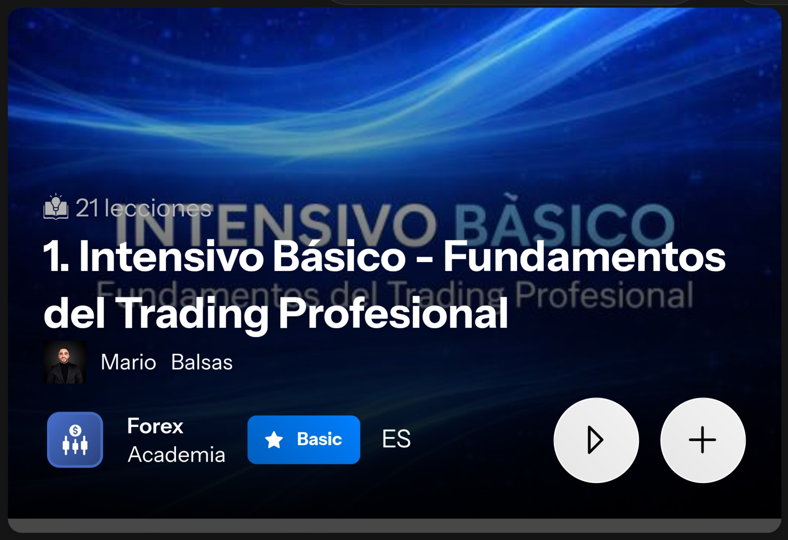
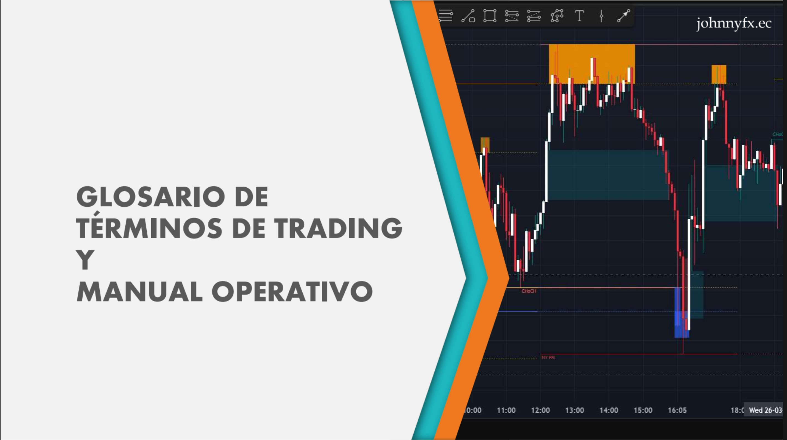
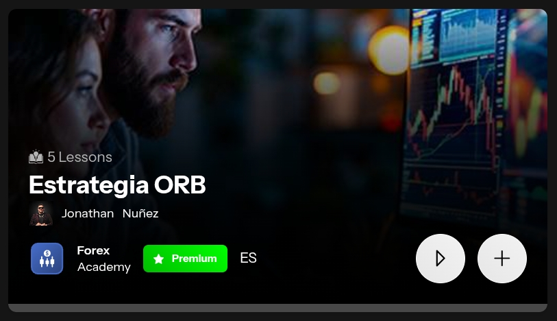
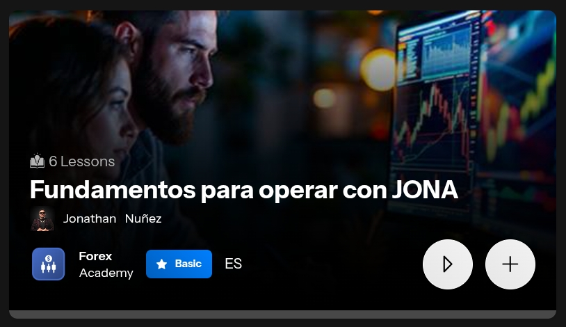
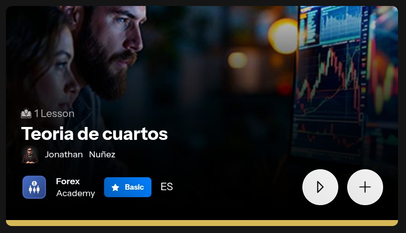

Fase 1
Enciende el motor
Intensivo Básico con Mario Balsas
"No se puede construir sobre arena."
Antes de tocar un solo dólar del mercado, necesitas hablar su idioma.
Mario Balsas construyó este intensivo para darte en horas lo que a otros
les tomó años descubrir a punta de pérdidas. Sin esta base, todo lo demás
es ruido.

Cómo acceder
📱 Desde tu celular
- Ingresa a jifulive.com
- Abre el menú lateral (las tres rayas horizontales ≡)
- Cambia el idioma a Español
- Selecciona "Aprendizaje en vivo"
- Busca a Mario Balsas → Cursos → Intensivo Básico
💻 Desde computadora o tablet
- Ingresa a jifulive.com
- Cambia el idioma (esquina superior derecha)
- Selecciona FOREX → Aprendizaje en vivo
- Mario Balsas → Cursos → Intensivo Básico
💡 Tu meta: Terminar el intensivo completo antes de avanzar.
No saltes pasos — cada módulo depende del anterior.
JIFU Connect
"La información en tiempo real vale más que cualquier análisis tardío."
Esta app es tu línea directa con el mercado y con los profesores.
Aquí llegan las alertas de trading cuando el setup está listo.
Si no la tienes instalada, operas a ciegas.
Qué hacer
- Descarga JIFU Connect en tu celular (App Store o Google Play)
- Activa las notificaciones — son la razón de ser de la app
- Explora la interfaz y familiarízate antes de la próxima tarea
MetaTrader 5 (MT5)
"Tu herramienta de trabajo diario. Conócela como la palma de tu mano."
MT5 es el campo de batalla. Cada trader profesional opera desde aquí.
Primero la conoces en modo demo — sin riesgo real — hasta que la dominas.
Papel y pluma en mano: esta sesión tiene mucho que anotar.

Qué hacer
- Descarga MetaTrader 5 (celular o computadora)
- Crea una cuenta demostrativa en Taurex
- Ve el video de capacitación en JifuLive
- Practica navegando la plataforma en modo demo
✏️ Ten papel y pluma. No confíes en la memoria para los conceptos nuevos.
Fase 2
Construye la base
Glosario de Términos & Manual Operativo
"El que no conoce el lenguaje del mercado, paga por aprenderlo."
Este documento cierra las brechas que el intensivo deja abiertas.
No es opcional. Al final tiene 3 preguntas que debes responder y
enviar a tu líder — ese paso confirma que entiendes los fundamentos.

Qué hacer
- Accede al documento desde Google Drive
- Léelo completo — no lo escanees
- Responde las 3 preguntas del final
- Envía tus respuestas a tu líder referente
Gestión de Riesgo
"Los traders que duran son los que aprenden a no perder antes de aprender a ganar."
La mayoría pierde dinero no por falta de estrategia, sino por falta de
control. Esta capacitación te enseña a proteger tu capital antes de
exponerlo. Es el seguro de vida de tu cuenta.
Qué hacer
- Ve el video de gestión de riesgo completamente
- Toma apuntes detallados — no lo veas como si fuera Netflix
- Aplica lo aprendido en tu cuenta demo antes de pasar a lo real
✏️ Esta tarea requiere cuaderno. Los conceptos son densos y se olvidan.
Aprende a Colocar Entradas
"Saber cuándo entrar es la mitad de la batalla. Saber cómo ejecutarlo es la otra mitad."
Puedes tener la mejor estrategia del mundo y arruinarla con una mala
ejecución. Este video te muestra la mecánica exacta para colocar
órdenes en MT5 sin errores.
Qué hacer
- Ve el presente video de colocación de entradas
- Abre MT5 en paralelo y practica cada paso en demo
- Coloca al menos 3 órdenes de práctica antes de continuar
Fase 3
Programa tu mente
Mentalidad y Objetivos
"Tu cuenta bancaria nunca va a crecer más allá de lo que tu mente le permita."
El trading sin mentalidad correcta es ruleta rusa. Esta fase instala
los principios que separan a los que sobreviven en el mercado de los
que se rinden en los primeros tres meses.
📻 IVOOX — Audiolibro
- Descarga la app IVOOX
- Busca: "Audiolibro – Padre Rico Padre Pobre"
- Escúchalo completo durante los primeros 30 días
🎙️ MIXLR — Comunidad en vivo
- Descarga la app MIXLR y crea tu cuenta
- Sigue el canal: Retired Young
- Conéctate en vivo: lunes a sábado, 11:00 a.m. (Ecuador)
Fase 4
Domina la estrategia
Estrategia ORB (Opening Range Breakout)
"Esta es la estrategia que usamos como comunidad. Aquí todo empieza a tener sentido."
ORB es el núcleo de nuestra operativa en JIFU. Es simple, repetible y probada.
Seis días de estudio intensivo, con práctica en demo simultánea.
No avances hasta que puedas explicarla con tus propias palabras.

Ritmo de estudio sugerido
- Día 1: ORB 1 + Fundamentos para operar con JONA
- Día 2: ORB 2 — inicia operativa en cuenta DEMO
- Día 3: Teoría de Cuartos
- Día 4: ORB 3
- Día 5: ORB 4
- Día 6: ORB 5 — revisión completa
📓 Cuaderno obligatorio. Elimina el celular como distracción. Revisa el material más de una vez.
Fundamentos para Operar con JONA
"La teoría sin ejecución no vale nada. Aquí pones todo en práctica."
Videos cortos, directos al punto. JONA te muestra cómo ejecutar
operaciones paso a paso en situaciones reales. Aplicación práctica
inmediata de lo que aprendiste en ORB.

Qué hacer
- Accede a la serie de videos de JONA dentro de sus cursos en JifuLive
- Ve cada video con MT5 abierto en paralelo
- Replica cada operación en tu cuenta demo
⚠️ Omite el video de cálculo de riesgo de esta sección — ya lo viste en la Tarea #5.
Teoría de Cuartos
"El oro no miente. Aprende a leerlo y tendrás una ventaja que muy pocos tienen."
La Teoría de Cuartos te enseña a leer la estructura del precio —
especialmente en oro (XAUUSD). Desarrolla el criterio para identificar
zonas clave antes de que el mercado llegue a ellas. Paciencia y
consistencia son el resultado de este entrenamiento.

Qué hacer
- Ve el módulo de Teoría de Cuartos en JifuLive
- Practica identificando cuartos en gráficos históricos
- Aplica la teoría en XAUUSD en tu cuenta demo
Fase 5
Completa el ecosistema
Instala Binance
"El dinero del futuro ya llegó. Necesitas saber manejarlo."
Binance es la puerta de entrada al ecosistema de cobros en criptomonedas
que usa JIFU. Tus ganancias viajan por aquí. Más vale conocerla ahora
que aprenderla bajo presión.
Qué hacer
- Descarga Binance (App Store o Google Play)
- Crea y verifica tu cuenta
- Familiarízate con la interfaz antes de necesitarla
Instala UglyCash
"La última pieza del sistema. Ahora sí estás listo."
UglyCash cierra el círculo del ecosistema de pagos JIFU.
Con esta app instalada y configurada, tienes todo lo que necesitas
para utilizar de forma cómoda los nuevos ingresos que vas a generar.
Qué hacer
- Descarga UglyCash en tu celular
- Crea tu cuenta y configúrala
- Consulta el valor actual de la tarjeta UglyVisa, recarga ese monto y solicítala